용접기능사 (2012-04-08 기출문제)
1과목: 용접일반
1. 다음 중 일반적으로 가스 폭발을 방지하기 위한 예방 대책에 있어 가장 먼저 조치를 취하여야 할 사항은?
- 방화수 준비
- 가스 누설의 방지
- 착화의 원인 제거
- 배관의 강도 증가
(정답률: 83%)

2. 다음 중 안내 레일형 일렉트로 슬래그 용접 장치의 주요 구성에 해당하지 않는 것은?
- 안내레일
- 제어상자
- 냉각장치
- 와이어 절단장치
(정답률: 60%)
3. 스터드 용접 장치에서 내열성의 도기로 만들어 아크를 보호하기 위한 것으로 모재와 접촉하는 부분은 흠이 패여 있어 내부에서 발생하는 열과 가스를 방출할 수 있도록 한 것을 무엇이라 하는가?
- 제어장치
- 스터드
- 용접토치
- 페룰
(정답률: 64%)
4. TIG 용접 토치의 분류 중 형태에 따른 종류가 아닌 것은?
- T형 토치
- Y형 토치
- 직선형 토치
- 플렉시블형 토치
(정답률: 72%)
5. 용착법을 용접 방향, 순서, 다층 용접으로 대별할 경우 다음 중 다층 용접법에 의한 분류법에 속하지 않는 것은?
- 덧살올림법
- 케스캐이드법
- 전직블록법
- 후진법
(정답률: 83%)
6. 다음 중 자동 불활성가스 텅스텐 아크 용접의 종류에 해당하지 않는 것은?
- 단전극 TIG 용접형
- 전극 높이 고정형
- 아크길이 자동 제어형
- 와이어 자동 송급형
(정답률: 35%)
7. 맞대기용접 이음에서 모재의 인장강도는 40kgf/mm2 이며, 용접 시험편의 인장강도가 45kgf/mm2 일 때 이음효율은 몇 % 인가?
- 104.4
- 112.5
- 125.0
- 150
(정답률: 63%)
8. 다음 중 반자동 CO2용접에서 용접전류와 전압을 높일때의 특성을 설명한 것으로 옳은 것은?
- 용접전류가 높아지면 용착율과 용입이 감소한다.
- 아크전압이 높아지면 비드가 좁아진다.
- 용접전류가 높아지면 와이어의 용융속도가 느려진다.
- 아크전압이 지나치게 높아지면 기포가 발생한다.
(정답률: 59%)
9. 다음 중 아크 용접 작업시 작업자가 감전된 것을 발견했을 때의 조치방법으로 적절하지 않은 것은?
- 빠르게 전원 스위치를 차단한다.
- 전원차단 전 우선 작업자를 손으로 이탈시킨다.
- 즉시 의사에게 연락하여 치료를 받도록 한다.
- 구조 후 필요에 따라서는 인공호흡 등 응급저치를 실시한다.
(정답률: 82%)
10. 용접 시공시 발생하는 용접변형이나 잔류응력 발생을 최소화하기 위하여 용접순서를 정할 때의 유의사항으로 틀린 것은?
- 동일평면 내에 많은 이음이 있을 때 수축은 가능한 자유단으로 보낸다.
- 중심에 대하여 대칭으로 용접한다.
- 수축이 적은 이음은 가능한 먼저 용접하고, 수축이 큰 이음은 맨 나중에 한다.
- 리벳작업과 용접을 같이 할 때에는 용접을 먼저 한다.
(정답률: 76%)
11. 다음 중 서브 머지드 아크 용접(Submerged Arc Welding)에서 용제의 역할과 가장 거리가 먼것은?
- 아크 안정
- 용락 방지
- 용접부의 보호
- 용착금속의 재질 개선
(정답률: 48%)
12. 다음 중 이산화탄소 아크 용접에 대한 설명으로 옳은 것은?
- 전류밀도가 낮다.
- 비철금속 용접에만 적합하다.
- 전류밀도가 낮아 용입이 얕다.
- 용착금속의 기계적 성질이 좋다.
(정답률: 65%)
13. 다음 중 이음 형상에 따른 저항 용접의 분류에 있어 겹치기 저항 용접에 해당하지 않는 것은?
- 점 용접
- 퍼커션 용접
- 심 용접
- 프로젝션 용접
(정답률: 61%)
14. 다음 중 피복 아크 용접에 비교한 가스메탈아크용접(GMAW)법의 특징으로 틀린 것은?
- 용접봉을 교체하는 작업이 불필요하기 때문에 능률적이다.
- 슬래그가 없으므로 슬래그 제거시간이 절약된다.
- 과도한 스패터로 인해 용접재료의 손실이 있어 용착효율이 약 60% 정도 이다.
- 전류밀도가 높기 때문에 용입이 크다.
(정답률: 66%)
15. 산업안전보건법상 화학물질 취급장에서의 유해ㆍ위험 경고를 알리고자 할 때 사용하는 안전ㆍ보건표지의 색채는?
- 빨간색
- 녹색
- 파란색
- 흰색
(정답률: 83%)
16. 전류가 증가하여 전압이 일정하게 되는 특성으로 이산화탄소 아크 용접장치 등의 아크 발생에 필요한 용접기의 외부 특성은?
- 상승 특성
- 정전류 특성
- 정전압 특성
- 부저항 특성
(정답률: 74%)
17. 일반적으로 사람의 몸에 얼마 이상의 전류가 흐르면 순간적으로 사망할 위험이 있는가?
- 5[mA]
- 15[mA]
- 25[mA]
- 50[mA]
(정답률: 78%)
18. 피복 아크 용접 시 일반적으로 언더컷을 발생시키는 원인으로 가장 거리가 먼 것은?
- 용접 전류가 너무 높을 때
- 아크 길이가 너무 길 때
- 부적당한 용접봉을 사용했을 때
- 홈 각도 및 루트 간격이 좁을 때
(정답률: 57%)
19. 금속나트륨, 마그네슘 등과 같은 가연성 금속의 화재는 몇 급 화재로 분류되는가?
- A급 화재
- B급 화재
- C급 화재
- D급 화재
(정답률: 70%)
20. 다음 중 용접 작업 전 예열을 하는 목적으로 틀린 것은?
- 용접 작업성의 향상을 위하여
- 용접부의 수축 변형 및 잔류 응력을 경감시키기 위하여
- 용접금속 및 열 영향부의 연성 또는 인성을 향상시키기 위하여
- 고탄소강이나 함금강 열 영향부의 경계를 높게 하기 위하여
(정답률: 61%)
21. 다음 중 표준 홈 용접에 있어 한쪽에서 용접으로 완전 용입을 얻고자 할 때 V형 홈이음의 판 두께로 가장 적합한 것은?(오류 신고가 접수된 문제입니다. 반드시 정답과 해설을 확인하시기 바랍니다.)
- 1 ~ 10mm
- 5 ~ 15mm
- 20 ~ 30mm
- 35 ~ 50mm
(정답률: 50%)
22. 용접 결함 중 치수상 결함에 해당하는 변형, 치수불량, 형상불량에 대한 방지대책과 가장 거리가 먼 것은?
- 역변형법 적용이나 지그를 사용한다.
- 습기, 이물질 제거 등 용접부를 깨끗이 한다.
- 용접 전이나 시공 중에 올바른 시공법을 적용한다.
- 용접조건과 자세, 운봉법을 적정하게 한다.
(정답률: 41%)
23. 정격전류 200A, 전격사용율 40%인 아크 용접기로 실제 아크 전압 30V, 아크 전류 130A로 용접을 수행한다고 가정할 때 허용사용률은 약 얼마인가?
- 70%
- 75%
- 80%
- 95%
(정답률: 50%)
24. 다음 중 수동가스 절단기에서 저압식 절단토치는 아세틸렌 가스 압력이 보통 몇 kgf/㎠ 이하에서 사용되는가?
- 0.07
- 0.40
- 0.70
- 1.40
(정답률: 55%)
25. 가스용접에서 산화방지가 필요한 금속의 용접, 즉 스테인리스, 스텔라이트 등의 용접에 사용되며 금속표면에 침탄 작용을 일으키기 쉬운 불꽃의 종류로 적당한 것은?
- 산화불꽃
- 중성불꽃
- 탄화불꽃
- 역화불꽃
(정답률: 57%)
26. 다음 중 아세틸렌 용기와 호스의 연결부에 불이 붙었을 때 가장 우선적으로 해야 할 조치는?
- 용기의 밸브를 잠근다.
- 용기를 옥회로 운반한다.
- 용기와 연결된 호스를 분리한다.
- 용기 내의 잔류가스를 신속하게 방출시킨다.
(정답률: 81%)
27. 다음 중 연강용 가스용접봉의 종류인 "GB43"에서 "43"이 의미하는 것은?
- 가스 용접봉
- 용착금속의 연신율 구분
- 용착금속의 최소 인장강도 수준
- 용착금속의 최대 인장강도 수준
(정답률: 77%)
28. 다음 중 절단에 관한 설명으로 옳은 것은?
- 수중 절단은 침몰선의 해체나 교량의 개조 등에 사용되며 연료 가스로는 헬륨을 가장 많이 사용한다.
- 탄소 전극봉 대신 절단 전용의 피복을 입힌 피복봉을 사용하여 절단하는 방법을 금속 아크 절단이라 한다.
- 산소 아크 절단은 속이 꽉 찬 피복 용접봉과 모재 사이에 아크를 발생시키는 가스 절단법이다.
- 아크 에어 가우징은 중공의 탄소 또는 흑연 전극에 압축공기를 병용한 아크 절단법이다.
(정답률: 46%)
29. 피복 아크 용접봉의 피복 배합제 성분 중 고착제에 해당하는 것은?
- 산화티탄
- 규소철
- 망간
- 규산나트륨
(정답률: 36%)
30. 다음 중 수중 절단에 가장 적합한 가스로 짝지어진 것은?
- 산소 - 수소 가스
- 산소 - 이산화탄소 가스
- 산소 - 암모니아 가스
- 산소 - 헬륨 가스
(정답률: 83%)
31. 다음 중 가스 실드계의 대표적인 용접봉으로 비드 표면이 거칠고 스패터가 많으며 수직상진, 하진 및 위보기 용접에서 우수한 작업성을 가지고 있는 용접은?
- E4301
- E4311
- E4313
- E4316
(정답률: 41%)
32. 다음 중 기계적 접합법의 종류가 아닌 것은?
- 볼트이음
- 리벳이음
- 코터이음
- 스터드 용접
(정답률: 73%)
33. 다음 중 용접모재와 전극 사이의 아크열을 이용하는 방법으로 용접 작업에서의 주된 에너지원에 속하는 용접열원은?
- 가스 에너지
- 전기 에너지
- 기계적 에너지
- 충격 에너지
(정답률: 77%)
34. 아크 절단법 중 텅스텐 전극과 모재 사이에 아크를 발생시켜 모재를 용융하여 절단하는 방법으로 알루미늄, 마그네슘, 구리 및 구리 합금, 스테인리스강 등의 금속재료의 절단에만 이용되는 것은?
- 티그 절단
- 미그 절단
- 플라즈마 절단
- 금속아크 절단
(정답률: 54%)
35. 다음 중 용접용 홀더의 종류에 속하지 않는 것은?
- 125호
- 160호
- 400호
- 600호
(정답률: 59%)
2과목: 용접재료
36. 다음 중 연강용 가스 용접봉의 길이 치수로 옳은 것은?
- 500mm
- 700mm
- 800mm
- 1000mm
(정답률: 42%)
37. 다음 중 가스용접에 사용되는 아세틸렌용 용기와 고무 호스의 색깔이 올바르게 연결된 것은?
- 용기 : 녹색, 호스 : 흑색
- 용기 : 회색, 호스 : 적색
- 용기 : 황색, 호스 : 적색
- 용기 : 백색, 호스 : 청색
(정답률: 61%)
38. 다음 중 교류아크 용접기의 종류에 있어 AWL-130의 정격 사용율(%)로 옳은 것은?
- 20%
- 30%
- 40%
- 60%
(정답률: 50%)
39. 직류아크용접기로 두께가 15mm이고, 길이가, 5m인 고장력 강판을 용접하는 도중에 아크가 용접봉 방향에서 한쪽으로 쏠리었다. 다음중 이러한 현상을 방지하는 방법으로 틀린 것은?
- 이음의 처음과 끝에 엔드 탭을 이용할 것
- 용량이 더 큰 직류용접기로 교체할 것
- 용접부가 긴 경우에는 후퇴용접법으로 할 것
- 용접봉 끝을 아크쏠림 반대 방향으로 기울일 것
(정답률: 76%)
40. 다음 중 Al의 성질에 관한 설명으로 틀린 것은?
- 가볍고 전연성이 우수하다.
- 전기전도도는 구리보다 낮다.
- 전기, 열의 양도체이며 내식성이 좋다.
- 기계적 성질은 순도가 높을수록 강하다.
(정답률: 55%)
41. 다음 중 탄소강의 표준 조직이 아닌 것은?
- 페라이트
- 펄라이트
- 시멘타이트
- 마텐자이트
(정답률: 56%)
42. 다음 중 주철의 용접성에 관한 설명으로 틀린 것은?
- 주철은 연강에 비하여 여리며 급랭에 의한 백선화로 기계가공이 어렵다.
- 주철은 용접시 수축이 많아 균열이 발생할 우려가 많다.
- 일산화탄소 가스가 발생하여 용착 금속에 기공이 생기지 않는다.
- 장시간 가열로 흑연이 조대화된 경우 용착이 불량하거나 모재와의 친화력이 나쁘다.
(정답률: 51%)
43. 다음 중 용접부품에서 일어나기 쉬운 잔류응력을 감소시키기 위한 열처리법은?
- 완전풀림(full annealing)
- 연화풀림(softening annealing)
- 확산풀림(diffusion annealing)
- 응력제거 풀림(stress relief annealing))
(정답률: 77%)
44. 다음 중 용융점이 가장 높은 금속은?
- 철(Fe)
- 금(Au)
- 텅스텐(W)
- 몰리브덴(Mo)
(정답률: 62%)
45. 다음 중 황동의 자연균열(season craking) 방지책과 가장 거리가 먼 것은?
- Zn 도금을 한다.
- 표면에 도료를 칠한다.
- 암모니아, 탄산가스 분위기에 보관한다.
- 180 ~ 260℃에서 응력제거 풀림을 한다.
(정답률: 55%)
46. 다음 중 주강에 관한 설명으로 틀린 것은?
- 주철로서는 강도가 부족 되는 부분에 사용된다.
- 철도 차량, 조선, 기계 및 광산 구조용 재료로 사용된다.
- 주강 제품에는 기포나 기공이 적당히 있어야 한다.
- 탄소함유량에 따라 저탄소 주강, 중탄소 주강, 고탄소 주강으로 구분한다.
(정답률: 77%)
47. 다음 중 스테인리스강의 조직에 있어 비자성 조직에 해당하는 것은?
- 페라이트계
- 마텐자이트계
- 석출경화계
- 오스테나이트계
(정답률: 50%)
48. 다음 중 피절삭성이 양호하고 고속절삭에 적합한 강으로 일반 탄소강보다 P, S의 함유량을 많게 하거나 Pb, Se, Zr 등을 첨가하여 제조한 강은?
- 쾌삭강
- 레일강
- 선재용 탄소강
- 스프링강
(정답률: 76%)
49. 다음 중 강에 함유되어 있는 수소(H2) 가스의 영향에 대한 설명으로 옳은 것은?
- 강도를 증가시킨다.
- 경도를 증가시킨다.
- 적열취성의 원인이 된다.
- 헤어크랙(hair crack)의 원인이 된다.
(정답률: 60%)
50. 금속 침투법 중 표면에 아연을 침투시키는 방법으로 표면에 경화층을 얻어 내식성을 좋게 하는 것은?
- 세라디이징(sheradizing)
- 크로마이징(chromizing)
- 칼로라이징(calorizing)
- 실리코나이징(siliconizing)
(정답률: 47%)
3과목: 기계제도
51. 그림과 같은 입체도에서 화살표가 정면일 경우 제3각 정투상도로 올바르게 나타낸 것은?
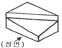
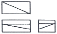
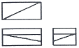
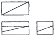
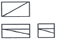
(정답률: 70%)
52. 그림과 같이 철판에 구멍일 뚫려있는 도면의 설명으로 올바른 것은?
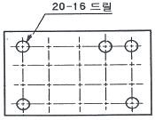
- 구멍지름 16mm, 구멍수량 20개
- 구멍지름 20mm, 구멍수량 16개
- 구멍지름 16mm, 구멍수량 5개
- 구멍지름 20mm, 구멍수량 5개
(정답률: 64%)
53. 다음 판금 가공물의 전개도를 그릴 때 각 부분별 전개도법으로 가장 적당한 것은?
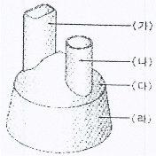
- (가)는 방사선을 이용한 전개도법
- (나)는 삼각형을 이용항 전개도법
- (다)는 평행선을 이용한 전개도법
- (라)는 삼각형을 이용한 전개도법
(정답률: 43%)
54. 도면의 양식에서 반드시 마련해야 할 사항이 아닌 것은?
- 윤곽선
- 중심 마크
- 표제란
- 비교 눈금
(정답률: 66%)
55. 그림과 같은 제3각 정투상도의 정면도와 평면도에 가장 적합한 우측면도는?
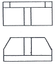
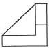
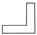
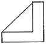
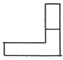
(정답률: 68%)
56. 특정 부위의 도면이 작아 치수기입 등이 곤란할 경우 그 해당 부분을 확대하여 그린 투상도는?
- 회전 투상도
- 국부 투상도
- 부분 투상도
- 부분 확대도
(정답률: 70%)
57. 다음 용접 기호 중 플러그 용접에 해당하는 것은?
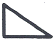
(정답률: 77%)
58. 다음 중 원호의 길이를 나타내는 치수기호로 올바른 것은?
(정답률: 79%)
59. 기계제도에서 평면인 것을 나타낼 필요가 있을 경우에는 다음 중 어떤 선의 종류로 대각선을 그려서 나타내는가?
- 굵은 실선
- 가는 실선
- 가는 1점 쇄선
- 가는 2점 쇄선
(정답률: 50%)
60. 배관의 간략도시방법 중 환기계 및 배수계의 끝장치 도시방법의 평면도에서 그림과 같이 도시된 것의 명칭은?
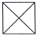
- 배수구
- 환기관
- 벽붙이 환기 삿갓
- 고정식 환기 삿갓
(정답률: 64%)